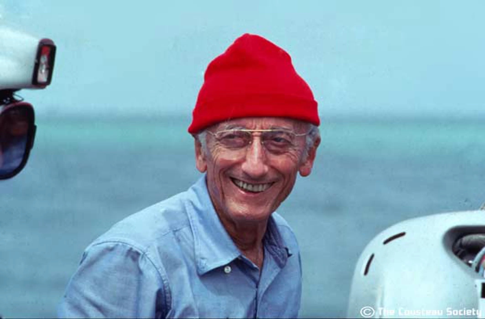

Jacques-Yves Cousteau
ocean explorer, conservationist, filmmaker, innovator, scientist, photographer

Jacques Cousteau in his iconic red cap
Here's a time line of Cousteau's life:
- 1910 — born in Saint-André-de-Cubzac, Gironde, France.
- 1930 — entered the École Navale and graduated as a gunnery officer.
- 1936 — automobie accident that caused Cousteau to have to change his plans in becoming a naval pilot, but it eventually worked out because of his passion for the ocean.
- 1943 — Cousteau and French engineer Émile Gagnan developed the first fully automatic compressed-air Aqua-Lung (scuba apparatus), which allowed divers to swim freely underwater for extended periods of time.
- 1948 — undertook a first campaign in the Mediterranean on board the sloop Élie Monnier, with Philippe Tailliez, Frédéric Dumas, Jean Alinat and the scenario writer Marcel Ichac. It was the first underwater archaeology operation using autonomous diving, opening the way for scientific underwater archaeology.
- 1950 — converted a British minesweeper into the Calypso, an oceanographic research ship, aboard which he and his crew carried out numerous expeditions. He leased a ship from Thomas Loel Guinness for a symbolic one franc a year.
- 1953 — with the publication of his first book, The Silent World, he correctly predicted the existence of the echolocation abilities of porpoises.
- 1956 — won the Palme d'Or at the Cannes Film Festival for The Silent World co-produced with Malle.
- 1959 — helped to invent the diving saucer (an easily maneuverable small submarine for seafloor exploration) which could reach a depth of 350 meters.
- 1974 — realizing that it would take an organized effort to protect the planet, created The Cousteau Society, a US-based, not-for-profit, membership group
- 1990 — launched a worldwide petition campaign to save Antarctica from mineral exploitation. His effort was successful: this pristine continent is now protected, for at least 50 years.
- 1997 — died in Paris, two weeks after his 87th birthday.
Captain Jacques-Yves Cousteau left his mark forever on the planet and the oceans. When Cousteau and his teams embarked aboard Calypso to explore the world, no one yet knew about the effects of pollution, over-exploitation of resources and coastal development. The films of Calypso’s adventures drew the public’s attention to the potentially disastrous environmental consequences of human negligence. Cousteau, through his life and his work, was a major player in the environmental movement.
If you have time, you should read more about this extraordinary person on his Wikipedia page.